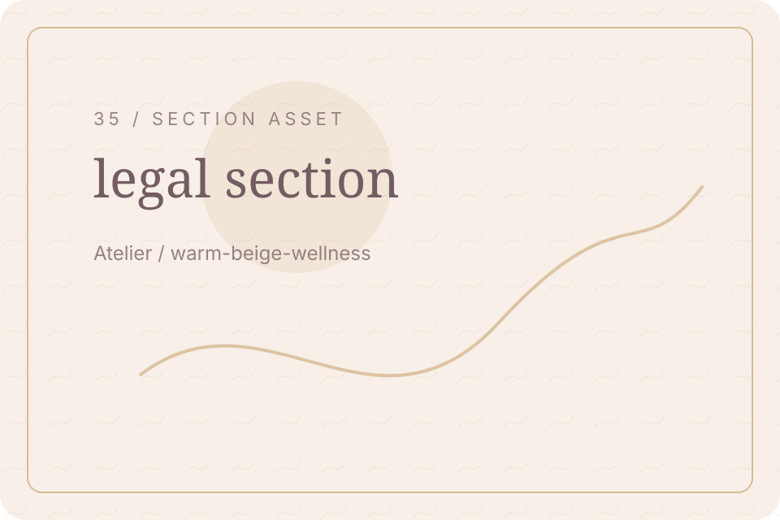
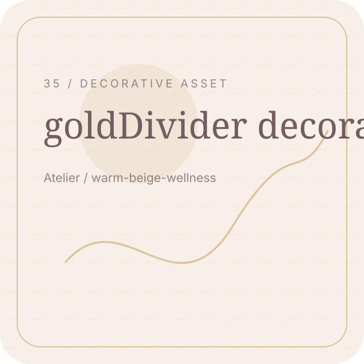

Atelier / Page Hero
Privacy
Clear information helps visitors use this site with confidence.

Atelier / User Choice
Your choices
Visitors should understand their options and contact routes.

Atelier / Trust Break
Trust through clarity
Clear information supports a better experience.
Atelier / Main Explanation
Plain language
This page explains the main information simply and clearly.
Atelier / Key Topic
Key details
Important details should be easy to read and understand.